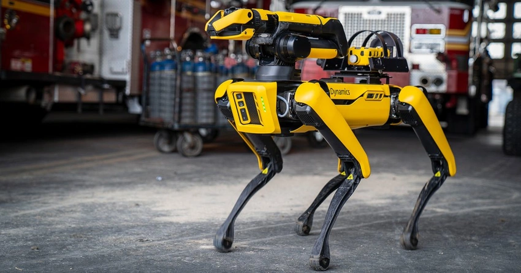
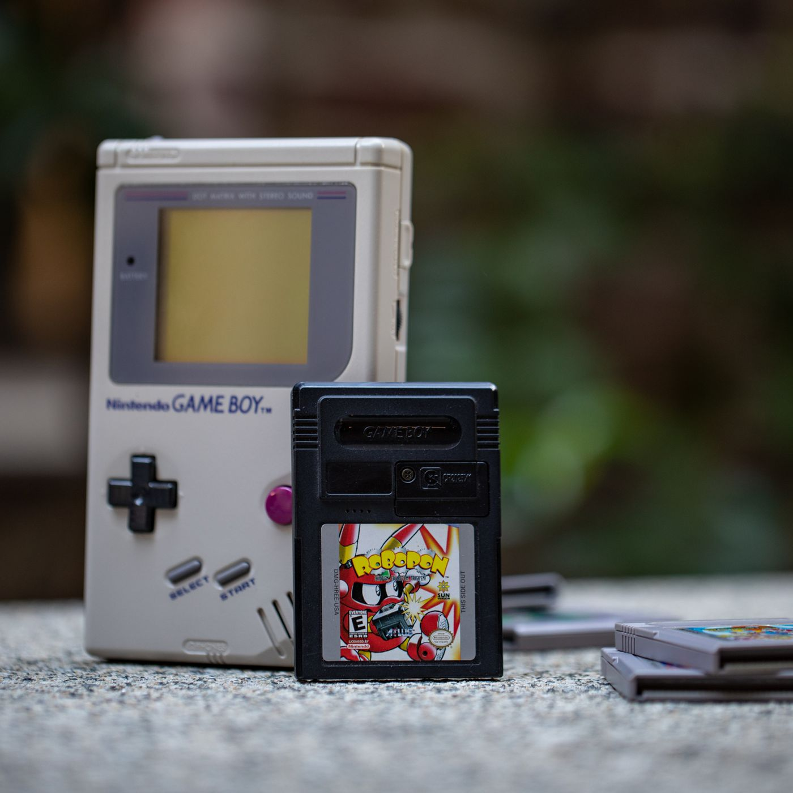

My Past
I have been programming for a short time compared to most of my peers, but I did have some experience before finishing highschool. I started programming writing bash files that I could run in my primary school computer lab. I learnt basic markup in the next year, including some html and css. So I guess technically this isn't the first website I've written. It was there I learned how to change text colour.
In year 8 I started basic C++ with some very special libraries when I joined our school's Zero Robotics team. That lasted exactly 1 month lol. But the skills I gained from that short stint I saved and continue to use to this day on various GPIO projects. I actually started arduino around the same time I left Zero, so the math sort of checks out.
I started programming functionally at the end of 2019 when I learnt python via online course. I started competitive programming around then. Mid 2020 I started joining various competitions and activities promoted by my school. I tried Grok's NCSS Advanced course this year and ended up full marking it which felt amazing.
Progress stalled in the next 2 years, although I still did my best to keep other projects going. At the end of 2020 I recreated Pokemon in the terminal. In mid 2021 I started my first full stack project. It was a hacked calculator that connected to an App. It could make phone calls and send texts and do crazy stuff. It connected to a database and could send and retrieve information, including communicating with other calculators. I tried to learn visual basic for this since CASIO programs its calculators in a language similar to VB but I ended up bypassing this entirely and just swapped out the microcontroller.
At the end of 2022 I received a job offer to work at WiseTech as a university student as part of their amazing Earn and Learn program. I started work at the start of 2023, and they formally taught me higher level programming for enterprise level code. I started out learning C# and git, how to work on enterprise code, the production pipleline and proper design principles for OO and CO. By the end of the year I had inherited a small project and co-managed it with another EAL student.
This was an Robotic Process Automation (RPA) system that would continually monitor the company's flagship product, and once deployed would attempt to log on and log off every 15 minutes. As part of the checks it would send queries and await responses, try to write data to databases and fill in forms. It would also check that the authentication system was operational and that all servers were up and working. It linked with Accessor, another product responsible for assigning servers to computers via RDP. Because it was relatively fringe and unimportant we had full autonomy over the direction of the product, provided our team lead approved any major design/architecture changes. It was my first experience in charge of a "real" product and it was so much fun to work on.
Since December 2024, I have taken a break from being a Dev to take up teaching programming at WiseTech to the next group of Earn and Learn students. It is very fulfilling and I'm very excited to see where it will take me, and what cool dev work I'll get to doing once I end my rotation in Education.